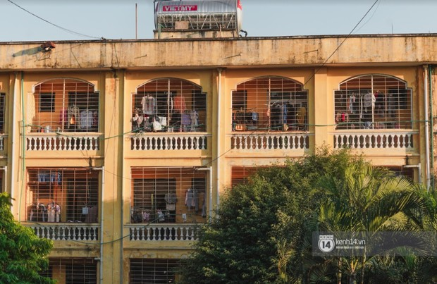
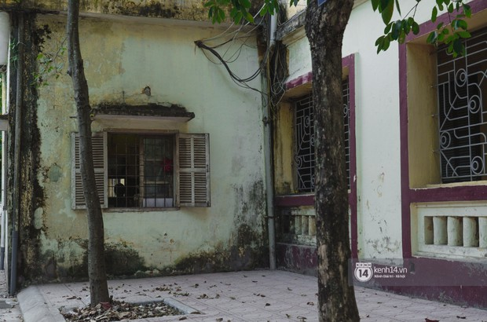
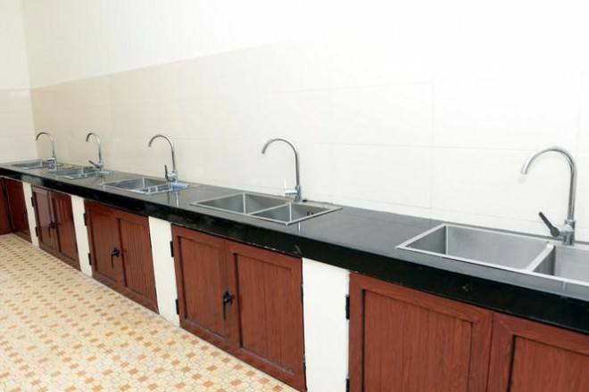
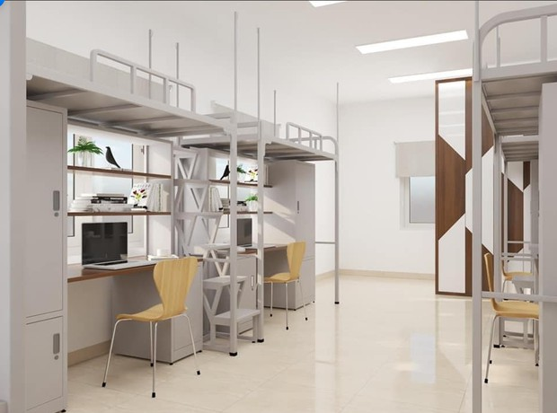
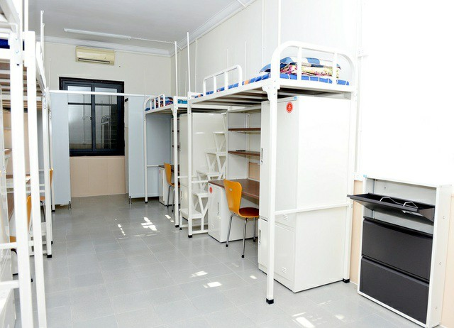
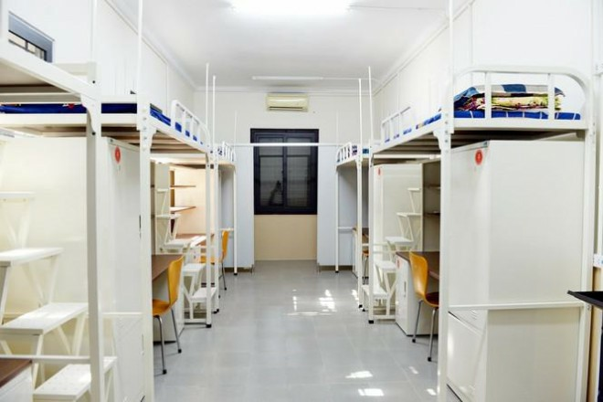
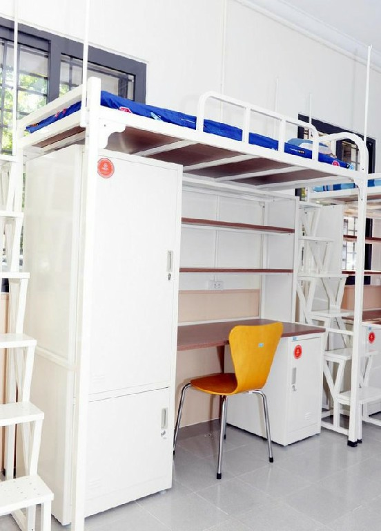

Khi nghĩ đến ký túc xá (KTX) sinh viên, nhiều người thường nghĩ đến những khu nhà ẩm thấp, bừa bộn hay thiếu tiện nghi. Thế nhưng, với sinh viên ĐH Kinh tế Quốc dân lại hoàn toàn khác, bởi mới đây, nhà trường vừa cho sơn lại 3 dãy nhà 5 - 6 - 7, lắp điều hòa tươm tất đâu ra đấy.
Trong nhà vệ sinh chung, sẽ chia làm 6 khu riêng biệt, tương ứng với 6 phòng trong 1 tầng ký túc. Mỗi khu lại có 1 bình nóng lạnh nên đảm bảo không có tình trạng chen lấn, xô đẩy khi cần vệ sinh cá nhân thường thấy.
 Một dãy nhà của khu ktx  Một góc sân yên bìnhThông thường, KTX thường sẽ cấm nấu nướng để đảm bảo an toàn chung. Tuy nhiên, trường Kinh tế Quốc dân đã xây dựng khu bếp tự nấu ăn được lắp đặt ở tầng giữa của tòa nhà. Mỗi bếp có lắp sẵn 6 vòi nước, cùng 6 khay đựng để phơi bát đũa. Điều này vừa giúp đảm bảo an toàn, mà vẫn không ảnh hưởng đến không gian sinh hoạt chung.
 Nhà bếp tự nấu ở mỗi tầng khu ktx mới (Nguồn: 24h.com.vn)Bên cạnh đó, để đảm bảo an ninh thì nhà trường cũng cho lắp camera 24/24 ở dãy hành lang, sân tập thể dục; đồng thời mỗi tòa sẽ có 1 bảo vệ chuyên phụ trách.
 Bản thiết kế của phòng ktx mới (Nguồn kenh14.vn)  Một phòng ktx đã được hoàn thiện (Nguồn kenh14.vn)  Một phòng ktx đã được hoàn thiện (Nguồn kenh14.vn)  Một góc phòng ktx đã được hoàn thiện (Nguồn kenh14.vn)Hiện tại, vẫn còn 4 tòa nhà ở Kinh tế Quốc dân vẫn chưa được sửa chữa. Dự kiến đến hết tháng 8/2021, nhà trường sẽ áp dụng mô hình mới cho toàn bộ khuôn viên.
Đăng bởi Area1110
tham khảo thông tin từ
Kenh14
và
24h.com.vn
.